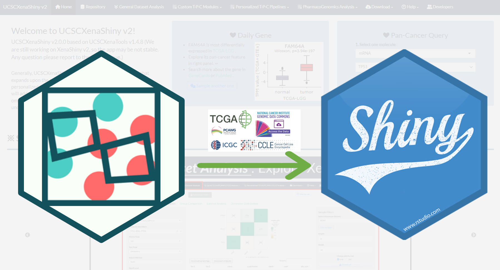

UCSCXenaShiny v2 Book
2024-07-08
About
UCSCXenaShiny is an R package for interactively exploring UCSC Xena datasets. It is mainly designed to provide a web app (built on the top of {shiny} framework and {UCSCXenaTools} package) for downloading, analyzing and visualizing datasets from UCSC Xena. In the latest version, the application can support both general and personalized tumor molecular analysis with versatile functional modules and user-friendly interface layouts. Overall, our tool aims to make best use of public omics data from UCSC Xena and assist broad user community with precision oncology research.

Here, we have prepared the tutorial book to introduce the detailed usage of UCSCXenaShiny based on R Markdown and bookdown. Firstly, we will start with the basic knowledge of UCSC Xena repository and its data hubs in Chapter 1. Then, the following chapters can be generally divided into two parts for the usage of R package and Shiny App:
Part Ⅱ
- Chapter 6：The ways to visit UCSCXenaShiny application.
- Chapter 7：The intuitive widgets and quick exploration modules in homepage.
- Chapter 8：The query for all datasets of UCSC Xena repository.
- Chapter 9：General analysis modules for any matrix datasets.
- Chapter 10：Custom analysis modules for TPC datasets.
- Chapter 11：The key preprocesses of personalized TPC pipelines.
- Chapter 12：The versatile analyses of personalized TPC pipelines.
- Chapter 13：Two download modules for the custom data subset.
Welcome to cite the following articles when UCSCXenaShiny has facilitated your study:
UCSCXenaShiny v2 —
Li S, et al. UCSCXenaShiny v2: Facilitating Integrative and Personalized Oncology Omics Analysis. 2024 (In preparation)
UCSCXenaShiny v1 —
Wang S, Xiong Y, Zhao L, Gu K, Li Y, Zhao F, et al. UCSCXenaShiny: an R/CRAN package for interactive analysis of UCSC Xena data. Bioinformatics. 2022;38 2:527-9. doi:10.1093/bioinformatics/btab561.
UCSCXenaTools —
Wang S and Liu X. The UCSCXenaTools R package: a toolkit for accessing genomics data from UCSC Xena platform, from cancer multi-omics to single-cell RNA-seq. Journal of Open Source Software. 2019;4 40:1627.
If you have any question, please report to the Github issues page or email to lishensuo@163.com